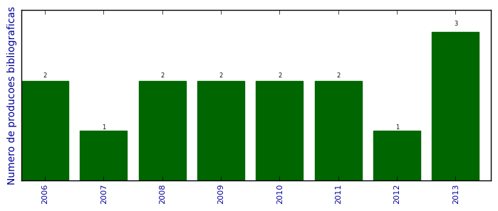

UFSM - Análise do Lattes
Total de produção bibliográfica

Número total de itens: 15
2013
| 1. | ANVERSA, J. ; Schmidt, T. ; FAZZIO, A. ; PIQUINI, P. C.. CdTe/HgTe (001) interface under pressure: an Ab initio study. 2013. Apresentação de Trabalho/Congresso |
| 2. | Schmidt, T. ; ANVERSA, J. ; PIQUINI, P. C. ; FAZZIO, A.. Electronic properties of HgTe/CdTe heterostructure under perturbations preserving time reversal symmetry. Em: March Meeting, 2013, Baltimore, USA. March Meeting 2013, 2013. [ citações Google Scholar | citações Microsoft Acadêmico | busca Google ] |
| 3. | Schmidt, T. ; ANVERSA, J. ; PIQUINI, P. C. ; FAZZIO, A.. Electronic properties of HgTe/CdTe heterostructure under perturbations preserving time reversal symmetry. 2013. Apresentação de Trabalho/Congresso |
2012
| 1. | ANVERSA, J. ; PIQUINI, P. C.. Comportamento sob pressão da interface (001) CdTe/HgTe. 2012. Apresentação de Trabalho/Outra |
2011
| 1. | ANVERSA, J. ; PIQUINI, P. C.. The effects of an explicit water environment on the interaction of a single wall carbon nanotube with amino acids: A theoretical study. Chemical Physics Letters (Print). v. 518, p. 81-86, 2011.  [ citações Google Scholar | citações Microsoft Acadêmico | busca Google ] Qualis: B2 |
| 2. | ANVERSA, J. ; PIQUINI, P. C.. Theoretical Study of the Influence Water Environment on Interaction of Amino Acids with Carbon Nanotube. 2011. Apresentação de Trabalho/Outra |
2010
| 1. | ANVERSA, J. ; PIQUINI, P. C.. How a water environment influences the interaction of aminoacids with carbon nanotubes: a tight binding molecular dynamic study. Em: XXXIII Encontro Nacional de Física da Matéria Condensada, 2010, Águas de Lindóia. XXXII Encontro Nacional de Física da Matéria Condensada, v. unico, 2010. [ citações Google Scholar | citações Microsoft Acadêmico | busca Google ] |
| 2. | ANVERSA, J. ; PIQUINI, P. C.. How a water environment influences the interaction of aminoacids with carbon nanotubes: a tight binding molecular dynamic study. 2010. Apresentação de Trabalho/Outra |
2009
| 1. | ANVERSA, J. ; PIQUINI, P. C.. First principles study of a polar solvent environment on the interaction of polar and non-polar aminoacids with carbon nanotubes. Em: XXXII Encontro Nacional de Física da Matéria Condensada, 2009, Águas de Lindóia. XXXII Encontro Nacional de Física da Matéria Condensada, v. único, p. 237-238, 2009. [ citações Google Scholar | citações Microsoft Acadêmico | busca Google ] |
| 2. | ANVERSA, J. ; PIQUINI, P. C.. First principles study of a polar solvent environment on the interaction of polar and non-polar aminoacids with carbon nanotubes. 2009. Apresentação de Trabalho/Outra |
2008
| 1. | ANVERSA, J. ; RIGO, V. (Vagner Rigo) ; PIQUINI, P. C.. Comportamento Térmico de Nanofios Semicondutores. Em: XI Escola Brasileira de Estrutura Eletrônica, 2008, Uberlândia. XI Escola Brasileira de Estrutura Eletrônica, 2008. [ citações Google Scholar | citações Microsoft Acadêmico | busca Google ] |
| 2. | ANVERSA, J. ; RIGO, V. (Vagner Rigo) ; PIQUINI, P. C.. Comportamento Térmico de Nanofios Semicondutores. 2008. Apresentação de Trabalho/Outra |
2007
| 1. | ANVERSA, J. ; RIGO, V. (Vagner Rigo) ; PIQUINI, P. C.. Comportamento Térmico de Nanofios Semicondutores. 2007. Apresentação de Trabalho/Outra |
2006
| 1. | ANVERSA, J. ; RIGO, V. (Vagner Rigo) ; PIQUINI, P. C.. Comportamento Térmico de Nanofios de Si/Ge. 2006. Apresentação de Trabalho/Outra |
| 2. | Costa, F. D. ; FIGUEIREDO, D. B. ; ANVERSA, J.. Determinando a Velocidade Instântanea Através de Vídeo Didatico. 2006. Apresentação de Trabalho/Outra |
(*) Relatório criado com produções desde 1999 até HOJE
Data de processamento: 09/04/2014 19:30:20